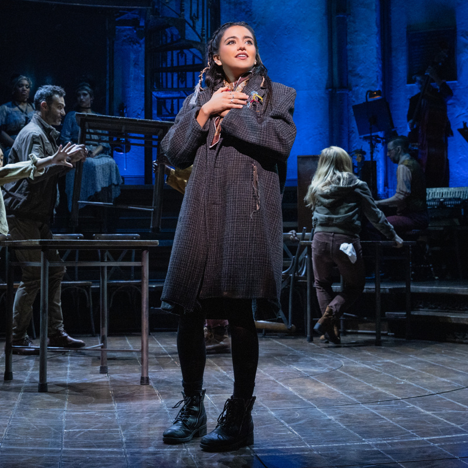

Hermes' Instructions • The Condition of the Walk
0:00
Featured Duo
Orpheus & Eurydice
Anaïs Mitchell (2019)
Orpheus
The Musician

Eurydice
Maia Reficco
The Test of Trust
Notice the condition set by Hades: Orpheus must walk ahead and never look back to see if Eurydice is following.
New Orleans Folk-Blues
Listen to the growling brass trombone notes and rhythm section giving the underground myth an American folk-jazz sound.
The Workers' Chorus
Watch how the chorus rallies behind Orpheus, singing in solidarity as they believe the world can change.